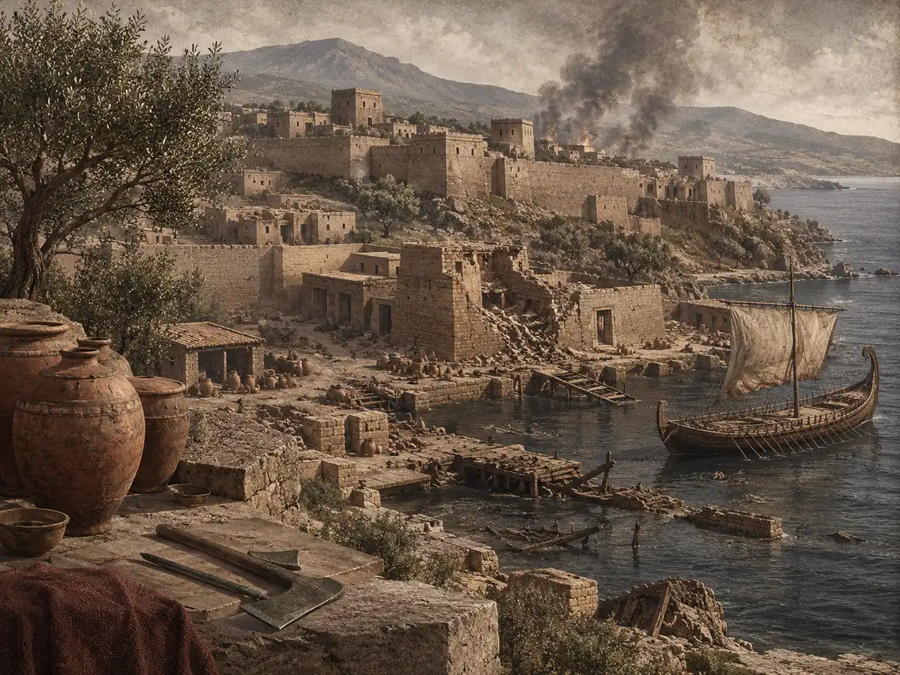
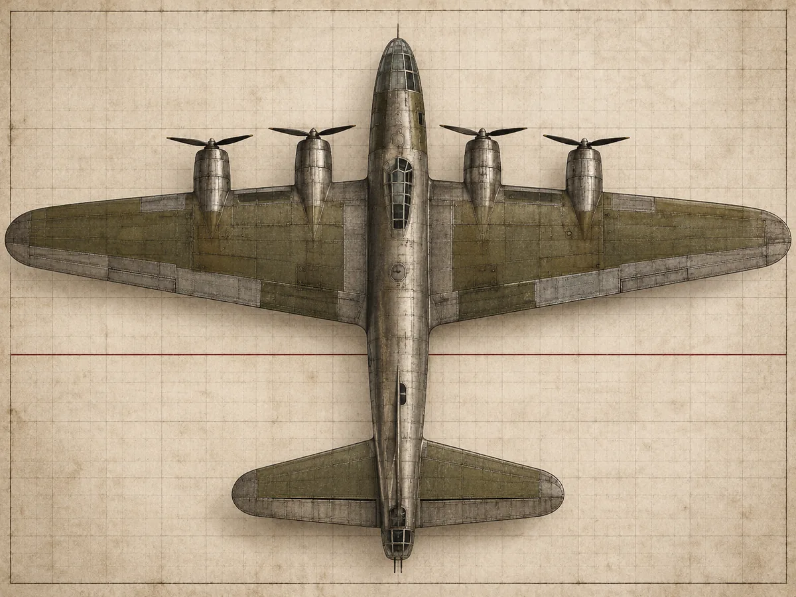
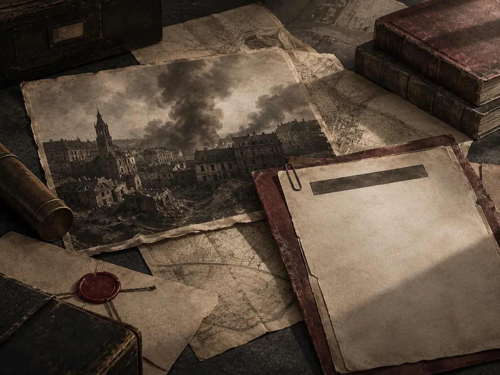

01
Declassified reading room / Exhibition catalogue
Read the case index by era and front. Open a file for the books and primary accounts behind each Forgotten Fronts episode.
#ad As an Amazon Associate I earn from qualifying purchases.
Visit the Curator's Desk
Curator's Essential Desk



Dossier index
EP_GREAT_FAMINE_OF_IRELAND
EP_LANCASTER_GRAND_SLAM
EP_SACK_OF_MAGDEBURG
EP_SALEM_WITCH_TRIALS
No records match this view.
This page sets no cookies and runs no analytics. The outbound Amazon links may set their own cookies, which Amazon controls. Nothing is tracked on this page.
Original editorial artwork only. Product links are affiliate search links, not scraped product pages. Prices can change on the store site.